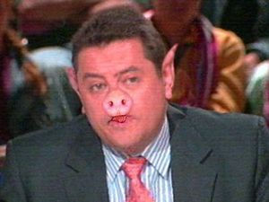
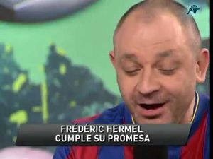

Punto Pelota
 De: La Frikipedia, la enciclopedia extremadamente seria.
De: La Frikipedia, la enciclopedia extremadamente seria.
Dícese de un programa de deportes de la cadena fascitoide del Infierno, más conocido como el Sálvame del furbo.
Introducción
Programa de deportes de la cadena Intereconomía para demostrar que no sólo se meten con el PSOE.
¿En qué consiste el programa?
- En este programa se habla exclusivamente de fútbol y sobretodo del Real Mandril. La consigna es clara: sacar mierda de donde no la hay, si gana el Mandril es el mejor equipo del mundo y sino gana es que quiso perder o que le robaron. Los equipos que juegan contra el Mandril no tienen mérito, nunca ganan merecidamente, les deja ganar el Mandril porqué no jugaron bien.
- El sello oficial del programa es que hablen todos a la vez sin que se entienda nada, enfoquen a uno y a otro mientras se les escapa la risita del Doctor Maligno y al final eso parezca la Verdulería del Barrio de la Esteban.
- En realidad Punto Pelota es otro programa dónde participan como presentador encubierto Jorge Javier Vázquez disfrazado de un tal Josep Pedrerol. Los demás contertulios son Belén Esteban disfrazada de Tomás Roncerdo, Kiko Hernández que es Hugo Gatti, Rafa Mora disfrazado de Siro López, Kiko Matamoros disfrazado de ex árbitro calvo porque las pelucas no le quedan bien, Karmele Marchante que se disfraza del Lobo Carrasco, Yola Berrocal es Carme Barceló y Lidia Lozano borda su papel de Damián González a quién nadie escucha ni hacen caso. De esta forma Telemierda y sus productoras pretenden liderar el panorama español televisivo.
- Plantean preguntas a los espectadores para que voten y se dejen la pasta con SMS. Dichas preguntas son del estilo "¿Puede este Madrid ganar el triplete?" (y luego sólo gana la Copa, lo demás lo gana el Barça).
Personajillos del programa
Presentador:

Pedrerol cuando se cabrea
Josep Perdedor Pedrerol: Es el presentador del programa. Para que no se note que el programa habla del Madrid, Madrid y Madrid se le eligió del Barça, así parece que da el pego de programa que aboga por hablar de mas equipos aparte del Mandril. En realidad trabaja en el programa porque realmente Intereconomía es una Organización Maligna creada por Hank Scorpio para destruir la Liga Española de Fútbol Profesional y Josep le debía un favor. También conocido como Borderol por razones evidentes. Le colocó Florentino Pérez porque se había quedado sin programa en la radio, de ahí que en ese programa no se critique nunca al presi del Madriz.
Colaboradores claramente madridistas
 Roncerdo antes de pasar por la sala de maquillaje.
 Hermel haciendo el ridículo.
- Tomás Roncerdo: Se trata de Belén Esteban disfrazada, pero lo hace tan bien como el pollo para su hija. Su mayor virtud: es que es mas tonto que un frigopie y cuando pierde el Madrid ha habido Villarato y cuando ganan la culpa es de Pellegrini, aunque ahora este Mourinho. El pobre se cree todo lo que dice y no ve que los demás sólo se ríen de él igual que cuando está en Sálvame. Es el bufón oficial del programa.
- Siro López: No es Rafa Mora, sólo a veces, en realidad es la reencarnación de Franco con mas pelo y no tan cabrón. Eso sí el bigote s elo sigue dejando porque así cuando come le hace de filtro toda la comida y a su boca llega justa para comer, además luego puede ir picando si se le ha quedado algo de comida. Es aficionado a la cachimba como ha demostrado en el Mundobásket 2010 de Turquía dónde llego a salir con la bragueta abierta e insinúandose a Paco Rabadán otro comentarista pero de básquet ( y esto sí es real no lo invento ).
- Hugo Gatti: Como dije antes se trata de Kiko Hernández a quién un dia s ele ocurrió ponerse acento argentino y caracterizarse como Doc de Regreso al futuro. Se metió tanto en el personaje que se hizo portero y se volvió tarumba. Es del Madrid porque un año fue al trofeo Joan Gamper con Boca Juniors y le endosaron un 9-1, desde entonces no puede ver a un culé.
- Pedro Pablo San Martín: Mandrilista serio. Parece que le den un bocadillo de polvorones antes de venir. Más seco que la mojama.
- Frédéric Hermel: Es el tío lejano de Karim Benzema pero después de comerse un par de hamburguesas. Siempre defiende al Real Mandril, pero aunque sea del Mandril cuando habla de su equipo lo pinta como la casa de la pradera, o el monte de Heidi y sus amiguitos. En realidad va al programa para coger enchufe y acabar jugando titular en el Real Mandril. La barriga dice que es por cuestión de parecerse a Ronaldo.
- Paco Buyo: Ex-portero mandrilista conocido por meter una pelota que iba fuera dentro del campo en la Liga de Tenerife. Realmente es de los más listos porque habla poco, entonces cobra por no hacer nada. Dice que lo aprendió siendo portero del Real Mandril. El día del 5-0 pronosticó un 1-3 (Own3d). Habla de que los árbitros son del F.C. Barceló, pero no dice nada de José Plaza. A veces se queda pillao [1].
- Jose Antonio Luque: Periodista que fue expulsado de Antena 3 por ser demasiado madridista.Es un discipulo de Tomas Roncerdo y tiene la leccion bien aprendida. Parece que no va con ningún equipo y que va con todos... pero si se habla mal del Real Mandril salta como una bestia para matar a alguien. Se excusa siempre haciendo horribles comparaciones con el Barça.
Colaboradores claramente barcemierdistas
A parte del presentador Josep Pedrerol encontramos:
- Carme Barceló: Enemiga íntima de Roncero y de lo más asqueroso del programa.Su inteligencia es nula, sus argumentos los peores, pero los culers la idolatran, no sabe un pito de futbol y lo unico que sabe decir es que todos atacan al farsa... Su virtud es poder sacar a Roncero de sus casillas para luego quedar como idiota cuando Roncero contesta algo relacionado con el furgol y la carma que no sabe nada no le queda mas que decir una chorrada de la vida personal de los demás. Sacó a la luz varios discos como El Alcorconazo Mix, el Lyonazo y el Mallorquinazo.
- Quim Domènech: Forofo del Barcelona su misión en el programa es alabar todo los del Barcelona y descalificar todo lo referente al Real Madrid. Nadie ha sido capaz de que critique al Barcelona.
- Lobo Que rasco: Un ex jugador del Farsa que se pasa hablando de la pelotita, de la pelotita y que cree que en el furbo no gana el que más goles mete sino el que más posesió tiene... Vamos, un iluminado... Encima es incapaz de aceptar que alguien se meó al Farsa (véase Real Madrid, Celtic, Chelsea, Inter y muchos casos más).
Otros colaboradores
- Damián González: Mas conocido anteriormente como Repetidora digital Damian Version 2.0. Ahora se dedica a vender lágrimas de Cocodrilo aunque en realidad son lágrimas que suelta desde que ganamos el Mundial. Se hizo rico tras vender 1 millon de copias de su famoso tira tira Mix, ahora han contratado a Aznar para cubrirle por que se parecen.
- Jorge D'Alessandro: El típico argentino sabiondo que te descubriría psicológicamente y físicamente. Si pierde el Mandril sabe la clave de porqué perdió, si gana sabe la clave de porqué ganó... y él perdiendo el tiempo en el programa pudiendo ayudar a Mou...
- Petón: Uno de los pocos colaboradores serios y profesionales, o eso, o está durmiendo con los ojos abiertos, tenemos que descubrirlo. Uno de los pocos colaboradores que pueden ir al programa sin ser de Madrid o Barça para así parecer que por lo menos tocan los demás equipos. Al final te das cuenta que hablar de los demás equipos hablan en 2 minutos y acaba siendo mas importante el flequillo de Cristiano Ronaldo que otro club como el Atlético o Valencia o Sevilla o otros modestos ganen cualquier trofeo, eso da igual no importan.
- Irene Junquera: La única no friki del programa. Una última encuesta dice que la gente ve Punto Pelota por sus ojos y su sonrisa pero también por sus
buenas tetas atributos de mujer. Las mujeres dicen que lo ven por ver si se lía con Cristiano Ronaldo.
- Paco Rabadan: El único no hora y el presentador le dejan.
Lista de frases ocurrentísimas de los colaboradores del programa
- Cristiano Ronaldo es mejor que Messi.
- Y también más completo, no te jode.
- Guardiola mea colonia.
- Sí Eau de Toilette con sabor a Barça.
- ¡Florentino, Florentino!
- Villarato otra vez.
- Fin de ciclo.
- Cristiano merece el Balón de Oro.
Vídeos de referencia
Autor(es):
- Fordus
- Conan
- Kevrochi
- Gñapero Solitario
- Genericool
- Deimos987
- Axelaxel12
- Juanjomoga
- Cuttlas Karamazov
- Generibot
Frikipedia 2005-2016, Licencia
GFDL 1.2 - Extraído por FrikiLeaks